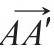
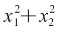

[1]丢勒（Dürer），《人体比例研究四卷》（Vier Bücher von menschlicher Proportion，1528）。准确地说，丢勒本人并没有采用symmetry这个词，而是他的朋友乔基姆·卡梅拉留斯（Joachim Camerarius）经他授权，在将这部德文书翻译成拉丁语的《论部分对称》（De symmetria partium）时采用了。波利克里托斯曾说过（πϵρìβϵλοποιϊκῶν，IV，2）：“采用大量的数字基本能保证雕塑的正确性。～”也见Chronique d’Egypte26（1951）一书第63—66页森克（Herbert Senk）的文章Au sujet de l’expressionσυμμετρiαdans Diodore I，98，5—9。维特鲁威（Vitruvius）这样下了定义：“对称是均衡的结果……均衡是各组成部分与整体的相称。”当代的伯克霍夫（George David Birkhoff）在这一方向上做了更详尽的研究，可见他的《审美标准》（Aesthetic measure，Cambridge, Mass.，Harvard University Press，1933）一书，以及发表在Rice Institute Pamphlet，Vol.19（July，1932，pp.189—342）上的文章《审美的数学理论及其在诗歌和音乐中的应用》（“A mathematical theory of aesthetics and its applications to poetry and music”）。
[2]安娜·威克汉姆（Anna Wickham），引自《沉思矿场》的跋（The contemplative quarry，Harcourt, Brace and Co.，1921.）
[3]Studium Generale，p.276。
[4]译注：此处应为右手螺旋；此处及下文关于地球自转与极轴方向构成的左/右手螺旋，作者均说反了。
[5]见莱布尼茨《哲学著作集》[Philosophische Schriften，ed.Gerhardt（Berlin 1875 seq.），Ⅶ，第352—440页]，特别是莱布尼茨的第三封信，第5节。
[6]可见《纯粹理性批判》一书，此外可见《任何一种能够作为科学出现的未来形而上学导论》第13节。
[7]我并没有意识到的一个事实是：在罗马占卜术语中，sinistrum有着与propitious（吉）相反的含义。
[8]也见A.Faistauer，“Links und rechts im Bilde，”Amicis，Fahrbuch der österreichischen Galerie，1926，p.77；Julius V.Schlosser，“Intorno alla lettura dei quadri，”Critica 28，1930，p.72；Paul Oppé，“Right and left in Raphael's cartoons，”Fournal of the Warburg and Courtauld Institutes7，1944，p.82.
[9]W.Ludwig，Rechts-links-Problem im Tierreich und beim Menschen，Berlin 1932.
[10]现在我们知道有一个例子，即在硝基肉桂酸与溴的化学反应中，圆偏振光会导致旋光性。
[11]赫胥黎（Julian S.Huxley）和德比尔（G.R.de Beer）在他们的经典著作《胚胎学基础》（Elements of embryology，剑桥大学出版社，1934年）一书中阐述道（第14章，总结，第438页）：“在最初阶段，沿卵子成分某一方向或多个方向上的一种或多种定量差别的梯度形式是统一的。卵子的构造本身就确定了能够产生某种特殊的梯度构型；不过梯度产生的位置并不确定，受外界因素的影响。”
[12]线段只有长度，而向量既有长度也有方向。向量实际上就是平移，尽管二者叫法不同。平移a将点A变换至Aʹ可以说成向量a=

；“平移a将点A变换至Aʹ”可以表达为“起点为A的向量a的终点为Aʹ”。如果将点A变换至Aʹ的平移将B变换至Bʹ，则可以说相同的向量以B为起点，以Bʹ为终点。[13]本图及下图均取自《大学校》（Studium Generale，第249页和第241页，W.Troll的文章《生物界的对称性》）。
[14]“Die mathematische Denkweise，”Zurich，1932.
[15]可对照参考第1章注1所引用的G.D.Birkhoff关于诗歌和音乐之数学的两部著作。
[16]译注：公元前900年至公元前700年。之所以有此称谓，据说是因为这一时期出土的彩陶失去了迈锡尼时代生动的造型与流畅的线条，代之以简单、质朴的几何图形。
[17]这里我引用了海伦·劳-波特（Helen Lowe-Porter）的译本，Knopf, New York，1927年和1939年。
[18]丢勒将其人像标准视为偏离的基准而非力争达成的目标。维特鲁威的《温度》似乎有相同的意味。第一章注1引用的波利克里托斯的话中，“基本”一词或许也指向同一方向。
[19]汉毕奇（J.Hambidge）在书中也提到了这一现象。他在《动态对称》（Dynamic Symmetry）一书的第146—157页详细引用了数学家阿奇博尔德（R.C.Archibald）就对数螺线、黄金分割和斐波那契数列所作的介绍。
[20]只有要求球心形成点阵时，布局才唯一确定。关于“点阵”的定义见第81页；关于该问题更全面的讨论见D.Hilbert and S.Cohn-Vossen，Anschauliche Geometrie，Berlin，1932，pp.40—41；and H.Minkowski，Diophantische AppiroximationenLeipzig，1907，pp.105—111.
[21]参考其论文“Ueber die Analogie der Kristall-symmetrie in der Ebene，”Zeitschr.f.Kristallographie 60，pp.278—282.
[22]这一基本理论是H.Maschke提出的。证明非常简单：取任意正定二次型，比如

，将群中每一个变换S都作用于它，再将所得的各二次型相加，结果是一个保持不变的正定二次型。[23]可参见P.Niggli的Geometrische Kristallographie des Diskontinuums（Berlin，1920）等书。
[24]译注：出自托马斯·曼的《魔山》一书，见第二章。
[25]可参考德意志自然研究者协会（Gesellschaft deutscher Naturforscher）最近在慕尼黑举行的会议上我所作的演讲《相对论50年》（50Jahre Relativitätstheorie），刊于《自然科学》（Die Naturwissenschaften）38（1951），pp.73—83。